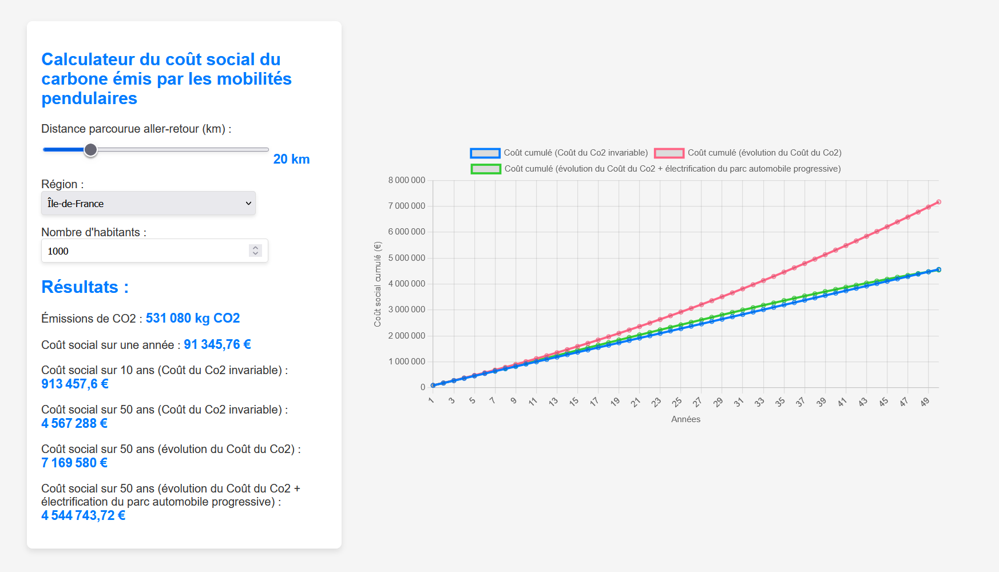
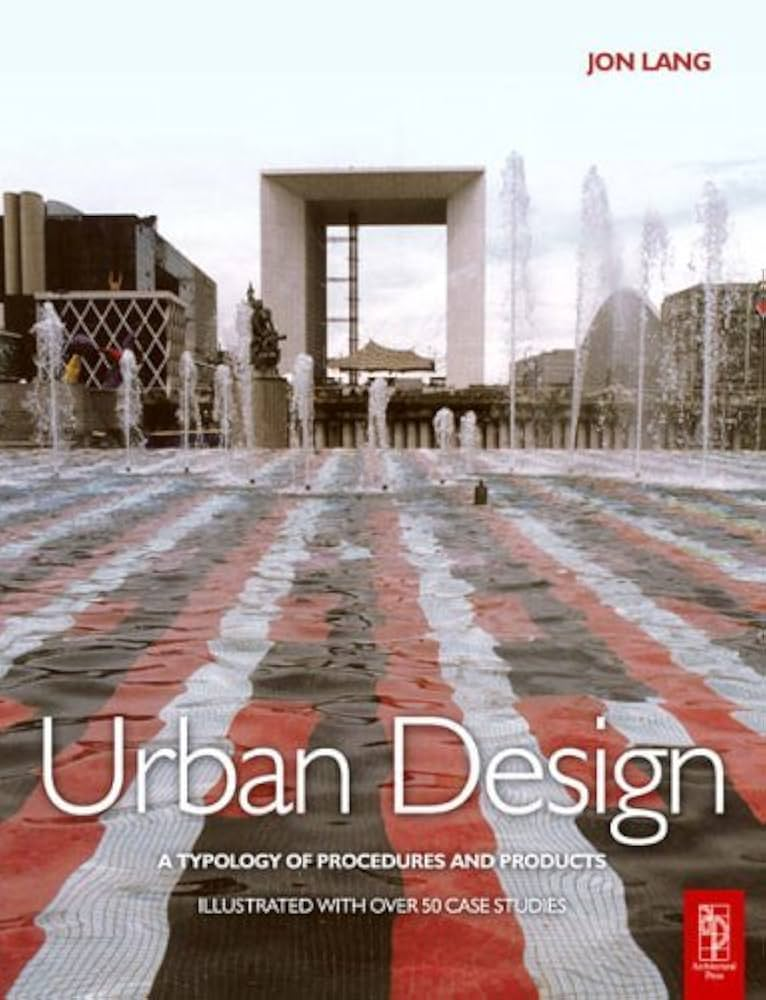
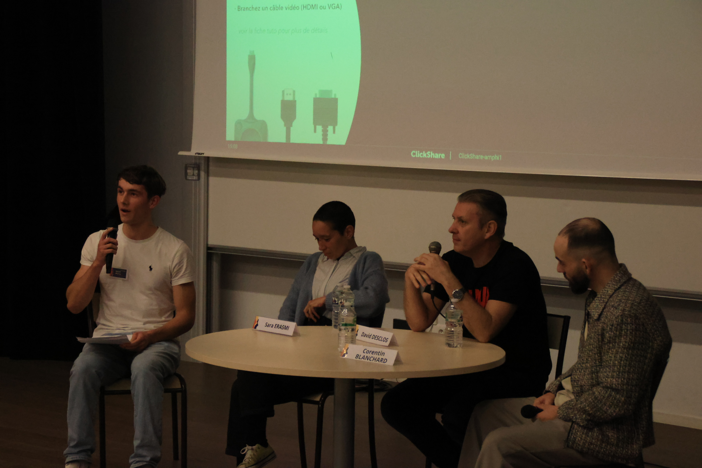

Étudiant en 2ème année de BUT Villes et Territoires Durables, passionné par l'urbanisme. Mon stage à Grand Châtellerault (Action Cœur de Ville) et à l'Agence des Territoires de la Vienne (mobilités, aménagement durable) ont renforcé mon désir de poursuivre en master pour contribuer à des villes intelligentes et résilientes.
À Propos de Moi
Projet: Calculateur Carbone
J'ai développé un Calculateur Carbone qui estime le coût social de la création de logements en périphérie, en lien avec la dépendance à la voiture. Il vise à sensibiliser aux enjeux de l'étalement urbain et des mobilités pendulaires.
Accéder au Calculateur
Projet: Cartographie 3D
Cartographie 3D des mobilités pendulaires à Châtellerault. Réalisée avec QGIS, Kepler.gl, et geojson.io, elle explore les habitudes domicile-travail en zone périurbaine et l'impact de la localisation des commerces (données 3D IGN) sur les flux. (Fichier GIF corrompu, en attente de remplacement).
Projet: Analyse CO₂ Europe
Dashboard interactif (Looker Studio) analysant les émissions de CO₂ des transports en Europe. Il croise les données de l'AEE (émissions véhicules neufs) et de la Banque Mondiale (démographie) pour offrir une lecture critique des dynamiques de décarbonation.
Voir le Dashboard
Projet: Lecture QGIS
Animation QGIS montrant la mobilisation de données (bâti, infrastructures, zones protégées) pour une lecture réglementaire d'un territoire. Intègre des normes du PLU (haies, espaces verts) pour évaluer la faisabilité de projets. (Fichier GIF corrompu, en attente de remplacement).
Compétences
Analyse Territoriale
Intérêt pour l'analyse territoriale fondée sur les sciences humaines (Durkheim) et le design urbain (Jon Lang). Ces lectures nourrissent ma capacité à croiser approches qualitatives (enquêtes) et quantitatives (statistiques, cartos) pour décrypter la complexité des territoires.
SIG & Cartographie
Maîtrise de QGIS (géotraitement, analyse spatiale) et Kepler.gl (visualisation). Capable de transformer des données complexes en représentations visuelles claires, comme la carte des inégalités de population dans la Vienne, pour comprendre les enjeux d'équité territoriale.
Langues & Outils
Anglais B2+ (C1 à l'oral/écrit certifié Cambridge), Allemand B1, Espagnol B1. Maîtrise de HTML/CSS (ce portfolio), Looker Studio, Google Sheets/Excel (analyse, nettoyage), et QGIS / Kepler.gl pour l'analyse spatiale.
Exp: Table Ronde Festisol
Organisation et animation d'une table ronde "Évasion culturelle" lors du Festisol à l'IUT, sur l'accès à la culture en milieu carcéral. L'événement a rassemblé plus de 100 personnes et des intervenants comme David Desclos (ex-détenu, humoriste) et Sarah Erasmi (intervenante en prison).
Contact & CV
Merci de votre visite. Si vous souhaitez échanger, n'hésitez pas à me contacter ou à télécharger mon CV.
👉 Télécharger mon CV
📬 Me contacter


